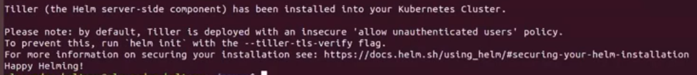
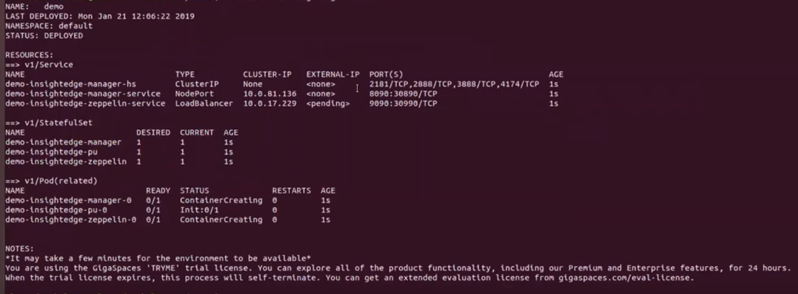
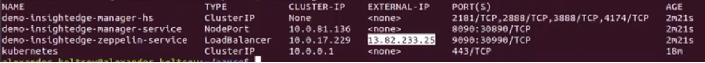
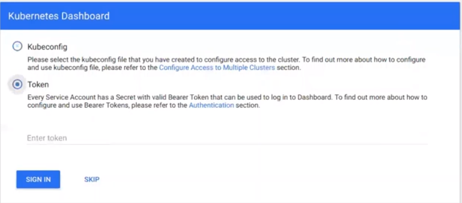
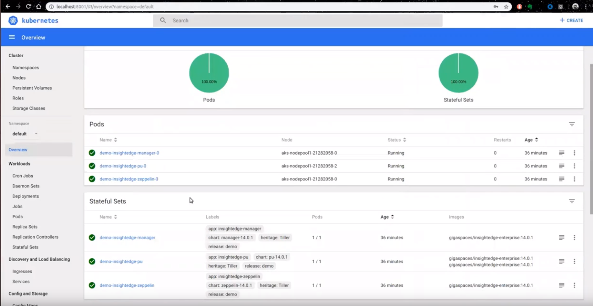

Deploying Platforms on Microsoft Azure (AKS)
This topic explains how to deploy KubeGrid on Azure Kubernetes Service (AKS). Before you begin, you should have the following already set up and/or installed in your development environment:
- Azure account
- Kubectl
- Helm
Deploying KubeGrid on Azure AKS requires the following steps to set up the environment, deploy Kubernetes on the cluster, and then install the GigaSpaces platform:
- Installing the Azure CLI.
- Creating a resource group for your AKS cluster.
- Creating an AKS cluster for KubeGrid.
- Configuring kubectl to connect to your AKS cluster.
- Creating a service account for Helm and deploying Tiller (Helm 2 only).
- Deploying KubeGrid using the |Helm charts.
Deploying involves the same tasks as deploying the data grid. The deployment tasks described below use insightedge Helm charts. However, you can also perform these tasks using the xap Helm charts (except for Apache Zeppelin, which is part of the deployment).
After deploying KubeGrid, you can use 's Ops Manager to monitor and troubleshoot the cluster, or you can use the Kubernetes dashboard as described below.
Setting Up the AKS Environment
Before you can install KubeGrid, you need to set up the AKS environment so that you have a Kubernetes cluster that can host your platform with full connectivity. This involves the first three steps mentioned above.
Installing the Azure CLI
In order to create your resource group and the AKS cluster, you need to use the Azure CLI. Installation instructions for this command line interface are available on the Microsoft website. Follow the set of instructions that suits your specific development environment (native, not running in a Docker container).
After the CLI is installed, log into Azure using the following command:
az login
The Azure CLI command will open the Azure web browser, where you can log in with your credentials.
Creating a Resource Group
You need to create a resource group for the AKS cluster where you will install KubeGrid.
-
Type the following Azure CLI command, assigning a group name (for example, InsightEdgeAKSGroup) and your general geographical location (for example, eastus).
az group create --name <group-name> --location <group-location>
The output you get after executing the above command should contain the following information:
{
"id": "/subscriptions/<guid>/resourceGroups/<myResourceGroup>",
"location": "<myLocationGroup>",
"managedBy": null,
"name": "<myResourceGroup>",
"properties": {
"provisioningState": "Succeeded"
},
"tags": null
}
Creating a New AKS Cluster
The next step in preparing the AKS environment is to create a new cluster that will host the KubeGrid instance.
-
Type the following command to create a cluster with 3 nodes. You must specify the resource group name (for example, InsightEdgeAKSGroup) and assign a cluster name (for example, InsightEdgeAKSCluster).
az aks create --resource-group <group-name> --name <cluster-name> --node-count 3 --enable-addons monitoring --generate-ssh-keys
You can use the Azure portal to check your AKS resource group, and to verify that your cluster is up and running.
Deploying Kubernetes on the AKS Cluster
After you set up your Azure AKS environment, you have to deploy Kubernetes on the AKS cluster by configuring kubectl to connect to the cluster, and setting up a Tiller service account (the Helm server-side, in-cluster component).
After you set up your Azure AKS environment, you have to deploy Kubernetes on the AKS cluster by configuring kubectl to connect to the cluster, and (if you are using Helm 2) setting up a Tiller service account (the Helm server-side, in-cluster component).
Configuring Kubectl
In order to use the AKS cluster you created to host Kubernetes and KubeGrid, kubectl needs to be able to connect to the cluster.
-
Type the following command to connect kubectl to the AKS cluster. You must specify the group name (for example, InsightEdgeAKSGroup) and the cluster name (for example, InsightEdgeAKSCluster).
az aks get-credentials --resource-group <group-name> --name <cluster-name>
-
Verify the connection to the AKS cluster in kubectl by typing the following command.
kubectl get nodes
The output should look like this, with all the nodes in "Ready" status.

Creating a Service Account for Helm
In addtion to configuring kubectl, you need to create a service account for Helm in Azure.
-
Create a helm-rbac.yaml file in an accessible location.
-
Paste the following content into the file, which specifies that you are creating a Tiller service account with ClusterRole role binding that includes administrator privileges on the cluster.
apiVersion: v1
kind: ServiceAccount
metadata:
name: tiller
namespace: kube-system
---
apiVersion: rbac.authorization.k8s.io/v1
kind: ClusterRoleBinding
metadata:
name: tiller
roleRef:
apiGroup: rbac.authorization.k8s.io
kind: ClusterRole
name: cluster-admin
subjects:
- kind: ServiceAccount
name: tiller
namespace: kube-system
-
Apply the service account and role binding that you specified in the file using the following command:
kubectl apply -f helm-rbac.yaml
Creating a Service Account for Helm (Helm 2 Only)
In addtion to configuring kubectl, you need to create a service account for Helm in Azure.
-
Create a helm-rbac.yaml file in an accessible location.
-
Paste the following content into the file, which specifies that you are creating a Tiller service account with ClusterRole role binding that includes administrator privileges on the cluster.
apiVersion: v1
kind: ServiceAccount
metadata:
name: tiller
namespace: kube-system
---
apiVersion: rbac.authorization.k8s.io/v1
kind: ClusterRoleBinding
metadata:
name: tiller
roleRef:
apiGroup: rbac.authorization.k8s.io
kind: ClusterRole
name: cluster-admin
subjects:
- kind: ServiceAccount
name: tiller
namespace: kube-system
-
Apply the service account and role binding that you specified in the file using the following command:
kubectl apply -f helm-rbac.yaml
Deploying Tiller in the AKS Cluster
The final step in setting up the environment is deploying Tiller in the cluster so you can interact directly with the Kubernetes API server to administer the Kubernetes resources.
If you don't have Helm installed, follow the instructions in the Helm documentation to install it.
Type the following command to add a basic Tiller deployment to the AKS cluster:
helm init --service-account tiller
The output should show all the artifacts that are created for Tiller, the URLs for the stable repo and local repo, and confirm that HELM_HOME has been configured. You should also see the following confirmation message.

Deploying Tiller in the AKS Cluster (Helm 2 Only)
If you are using Helm2, the final step in setting up the environment is deploying Tiller in the cluster so you can interact directly with the Kubernetes API server to administer the Kubernetes resources.
If you don't have Helm installed, follow the instructions in the Helm documentation to install it.
Type the following command to add a basic Tiller deployment to the AKS cluster:
helm init --service-account tiller
The output should show all the artifacts that are created for Tiller, the URLs for the stable repo and local repo, and confirm that HELM_HOME has been configured. You should also see the following confirmation message.
Verify Operation
Verify that Helm is running by typing helm search at the prompt. This should generate a list of all the contents of the stable repo with their details.
Deploying KubeGrid on Azure AKS
This page provides general information on how to deploy KubeGrid in a Kubernetes cluster. For detailed installation and configuration instructions, see Deploying a Data Grid in KubernetesGetting Started with GigaSpaces in Kubernetes Using Helm Charts and Operator .
Type the following command to add the GigaSpaces Helm charts to the Helm repo:
helm repo add gigaspaces http://resources.gigaspaces.com.s3.amazonaws.com/helm-charts
Type the following command to fetch the GigaSpaces Helm charts and unpack them locally:
helm fetch gigaspaces/insightedge --version= --untar
helm pull gigaspaces/insightedge --version= --untar
helm fetch gigaspaces/insightedge --version= --untar
You must use Helm 2 with KubeGrid. Helm 3 contains a new chart version, which is a breaking change and is not currently supported by KubeGrid.
Installing KubeGrid
Perform this procedure to install KubeGrid and apply the public IP address, so that you can use the Apache Zeppelin web notebook with .
If you want a public IP address for Apache Zeppelin when working with in the AKS environment, the default service type (NodePort) in the zeppelin Helm chart must be changed to LoadBalancer before applying the Helm install command.
To install in KubeGrid:
-
To modify the Helm chart, open the insightedge-zeppelin values.yaml file and change the service type from NodePort to LoadBalancer. The chart should look like this:
# service: Zeppelin service configuration.
service:
# type: Service type.
type: LoadBalancer
-
Save the file.
-
Type the following command to deploy in AKS:
helm install insightedge --name demo
helm install demo insightedge
helm install insightedge --name demo
You should see the following output:

-
It can take several minutes for the Zeppelin pod to get its external IP address. To monitor, type the following command:
kubectl get services --watch
When the IP address is available, you will see the following:

-
Copy the Zeppelin IP address into the browser window and add the port (9090). The Apache Zeppelin web notebook should load.

Deploying the Kubernetes Dashboard
You may want to deploy the Kubernetes dashboard in AKS, so you can properly administer your Kubernetes-based application.
-
Type the following command to create a service account for the dashboard:
kubectl create serviceaccount kubernetes-dashboard -n kube-system
-
Define the ClusterRole for the service account with the following command:
kubectl create clusterrolebinding kubernetes-dashboard -n kube-system --clusterrole=cluster-admin --serviceaccount=kube-system:kubernetes-dashboard
-
To create port forwarding to your local host, type the following command:
az aks browse --resource-group <group-name> --name <cluster-name>
-
If you see warnings, you may not have sufficient rights. Type http://localhost:8001/#!/login in your browser to access the Kubernetes dashboard login page.
-
Select Token authorization in the login window.

-
In the command window, type the following to get a token for secure sign-in:
kubectl get secret $(kubectl get serviceaccount kubernetes-dashboard -n kube-system -o jsonpath="{.secrets[0].name}") -n kube-system -o jsonpath="{.data.token}" | base64 --decode
-
Copy the token from the command window into the Enter token field, then click Sign in.
The Kubernetes dashboard opens, where you can view the details of your deployment.
